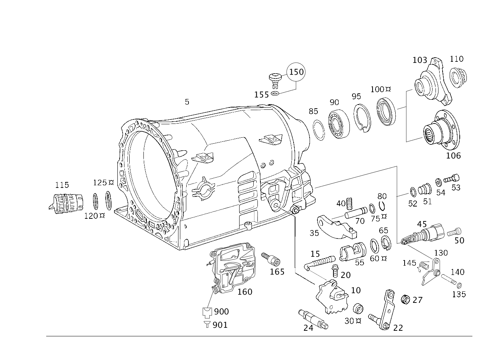

| № | Артикул | Название | Кол. | Примечание | Ограничение |
|---|---|---|---|---|---|
| 5 | A 140 271 26 01 | - Корпус (GEHAEUSE) | 1 | ||
| 5 | A 220 271 07 01 | - Корпус | 1 | ||
| 10 | A 140 270 06 57 | - Фиксатор (SCHALTRASTE) | 1 | ПЛАСТИНА С ПАЗАМИ | |
| 15 | A 140 270 11 65 | - Тяги переключения передач | 1 | ||
| 20 | A 140 990 57 01 | - болт (SCHRAUBE) | 1 | M6X20 | |
| 22 | A 140 270 08 26 | - ВАЛ | - | ||
| 22 | A 220 270 05 26 | - ВАЛ | - | ||
| 22 | A 220 270 00 56 | - Рычаг (HEBEL) | 1 | РЫЧАГ СЕЛЕКТОРА ДИАПАЗОНОВ | |
| 27 | A 140 992 00 10 | - Втулка с наружной фаской | - | ||
| 27 | A 210 992 00 10 | - втулка (BUCHSE) | 1 | РЫЧАГ СЕЛЕКТОРА ДИАПАЗОНОВ | |
| 30 | A 006 997 01 47 | - Уплотнительное кольцо (DICHTRING) | 1 | ||
| 30 | A 009 997 48 47 | - Уплотнительное кольцо | 1 | ||
| 35 | A 140 278 05 21 | - Собачка (SPERRKLINKE) | 1 | NOCH GÜLTIG FÜR NAG1 | |
| 40 | A 140 993 86 01 | - пружина (FEDER) | 1 | ||
| 51 | A 140 270 08 05 | - Крышка (DECKEL) | 1 | ПОСЛЕДОВАТЕЛЬНЫЙ ВЫБОР ДИАПАЗОНОВ ПЕРЕКЛЮЧЕНИЯ ПЕРЕДАЧ | |
| 52 | A 022 997 87 48 | - Уплотнительное кольцо (DICHTRING) | 1 | ПОСЛЕДОВАТЕЛЬНЫЙ ВЫБОР ДИАПАЗОНОВ ПЕРЕКЛЮЧЕНИЯ ПЕРЕДАЧ | |
| 53 | A 140 990 58 01 | - Болт, особая форма | 1 | ПОСЛЕДОВАТЕЛЬНЫЙ ВЫБОР ДИАПАЗОНОВ ПЕРЕКЛЮЧЕНИЯ ПЕРЕДАЧ | |
| 54 | N 006902 007100 | - Шайба | - | ||
| 54 | N 000125 008443 | - Шайба | 1 | ПОСЛЕДОВАТЕЛЬНЫЙ ВЫБОР ДИАПАЗОНОВ ПЕРЕКЛЮЧЕНИЯ ПЕРЕДАЧ; 8 MM | |
| 55 | A 140 270 01 50 | - Направляющая втулка (FUEHRUNGSBUCHSE) | 1 | ||
| 60 | A 140 997 23 45 | - Кольцевая прокладка (O-RING) | 1 | ||
| 65 | A 140 994 55 35 | - Стопорное кольцо (SICHERUNGSRING) | 1 | ||
| 70 | A 140 991 01 01 | - Палец (BOLZEN) | 1 | ||
| 75 | A 140 997 21 45 | - Кольцевая прокладка (O-RING) | 1 | ||
| 80 | A 140 994 56 35 | - Пруж. стопорное кольцо (SPRENGRING) | 1 | ||
| 85 | A 140 272 06 52 | - Дистанционная шайба (ABSTANDSSCHEIBE) | NB | 0,2 MM; 0.2 MM | |
| 85 | A 140 272 07 52 | - Дистанционная шайба (ABSTANDSSCHEIBE) | NB | 0,3 MM; 0.3 MM | |
| 85 | A 140 272 08 52 | - Дистанционная шайба (ABSTANDSSCHEIBE) | NB | 0,4 MM; 0.4 MM | |
| 85 | A 140 272 09 52 | - Дистанционная шайба (ABSTANDSSCHEIBE) | NB | 0,5 MM; 0.5mm | |
| 90 | A 140 981 01 25 | - Шарикоподшипник (KUGELLAGER) | 1 | ||
| 95 | A 003 994 52 41 | - предохранитель (SICHERUNG) | 1 | ПО НЕОБХОДИМОСТИ 2.0 MM | |
| 95 | A 003 994 53 41 | - предохранитель (SICHERUNG) | 1 | ПО НЕОБХОДИМОСТИ 2.1 MM | |
| 95 | A 003 994 54 41 | - предохранитель (SICHERUNG) | 1 | ПО НЕОБХОДИМОСТИ 2.2 MM | |
| 100 | A 140 997 08 46 | - Радиальный сальник | - | ||
| 100 | A 023 997 87 47 | - Уплотнительное кольцо (DICHTRING) | 1 | ||
| 103 | A 210 272 04 45 | - ФЛАНЕЦ | - | [035] ИСПОЛЬЗОВАТЬ СТАРЫЙ НОМЕР ДЕТАЛИ ПО КП 4 763247 | |
| 103 | A 211 272 01 45 | - Фланец шарнира (GELENKFLANSCH) | - | ||
| 103 | A 211 272 03 45 | - Фланец (FLANSCH) | 1 | ОКРУЖНОСТЬ ЦЕНТРОВ ОТВЕРСТИЙ ФЛАНЦА 100 MM | |
| 103 | A 220 272 06 45 | - Фланец (FLANSCH) | 1 | ОКРУЖНОСТЬ ЦЕНТРОВ ОТВЕРСТИЙ ФЛАНЦА 110mm [077] ВАРИАНТ ФЛАНЦА ШАРНИРА | |
| 110 | A 140 990 11 50 | - Гайка 12-гран. с фланцем (12-KANTMUTTER MIT FLANSCH) | 1 | M26X1.5 | |
| 115 | A 140 270 02 50 | - Промежуточный штекер | - | [039] ИСПОЛЬЗОВАТЬ СТАРЫЙ НОМЕР ДЕТАЛИ ПО КП 5 772043 | |
| 115 | A 203 540 00 53 | - ПРОСТАВКА | - | ||
| 115 | A 203 540 01 53 | - Направляющая втулка | 1 | ||
| 115 | A 203 540 02 53 | - Направляющая втулка (FUEHRUNGSBUCHSE) | 1 | ||
| 120 | A 015 997 05 45 | - Кольцевая прокладка | 1 | 36.1X3.4 [417] БОЛЬШЕ НЕ ПОСТАВЛЯЕТСЯ, ЗАКАЗЫВАТЬ КОМПЛЕКТ ПОСТАВКИ | |
| 125 | A 015 997 06 45 | - Кольцевая прокладка | 1 | 31.0X2.8 [417] БОЛЬШЕ НЕ ПОСТАВЛЯЕТСЯ, ЗАКАЗЫВАТЬ КОМПЛЕКТ ПОСТАВКИ | |
| 140 | A 140 991 05 01 | - Палец (BOLZEN) | 1 | ||
| 145 | A 140 993 08 20 | - Торсионная пружина (DREHFEDER) | 1 | [402] БОЛЬШЕ НЕ ПОСТАВЛЯЕТСЯ | |
| 150 | A 126 270 01 82 | - Воздушный клапан (ENTLUEFTER) | 1 | ||
| 155 | A 005 997 78 48 | - Уплотнительное кольцо (DICHTRING) | 1 | ||
| 160 | A 000 270 17 52 | - Коммутационное устройство | 1 | МОДУЛЬ СЕРВОПРИВОДА АКП [429] ДЕТАЛЬ, СВЯЗАННАЯ С ПРОТИВОУГОННОЙ БЕЗОПАСНОСТЬЮ [672] ДЕТАЛЬ ПОСЛЕ УСТАН.ПРОВЕРИТЬ НА АКТУАЛЬНОСТЬ "ПРОШИВНОГО" ПО [697] ДЕТАЛЬ ПОСТАВЛЯЕТСЯ ТОЛЬКО/ИЛИ ТАКЖЕ КАК ЗАП.ЧАСТЬ [370] ЭЛЕКТРОННАЯ СИСТЕМА УПРАВЛЕНИЯ КП | |
| 160 | A 000 270 18 52 | - Коммутационное устройство (SCHALTGERAET) | 1 | МОДУЛЬ СЕРВОПРИВОДА АКП [429] ДЕТАЛЬ, СВЯЗАННАЯ С ПРОТИВОУГОННОЙ БЕЗОПАСНОСТЬЮ [672] ДЕТАЛЬ ПОСЛЕ УСТАН.ПРОВЕРИТЬ НА АКТУАЛЬНОСТЬ "ПРОШИВНОГО" ПО [697] ДЕТАЛЬ ПОСТАВЛЯЕТСЯ ТОЛЬКО/ИЛИ ТАКЖЕ КАК ЗАП.ЧАСТЬ [370] ЭЛЕКТРОННАЯ СИСТЕМА УПРАВЛЕНИЯ КП | |
| 165 | N 000000 002439 | - Винт с 6-гр. глвк (SECHSRUNDSCHRAUBE) | 4 | КРЕПЛЕНИЕ БЛОКА УПРАВЛЕНИЯ M6X25; M6X25 | |
| 900 | A 050 545 30 28 | - Корпус штекера (STECKERGEHAEUSE) | 1 | МОДУЛЬ СЕРВОПРИВОДА АКП A80;5\-PIN MLK1.2,SLK2.8; 5\-PIN MLK1.2,SLK2.8 | |
| 901 | A 019 545 18 26 | - Контактная втулка (KONTAKTBUCHSE) | NB | 0.22\-0.5 MM2 MLK1.2; 0.22\-0.5 MM2 MLK1.2 | |
| 901 | A 000 540 39 05 | - Электрический провод (EL LEITUNG) | NB | 1.5 MM2 SLK2.8; 1.5 MM2 SLK2.8 |
Позиций: 56 · подписано на схемах: 56 · колесо — плавный зум в курсор, перетаскивание — пан, двойной клик — зум, клик по артикулу — скопировать.